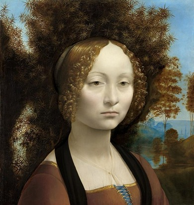
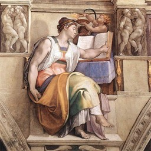
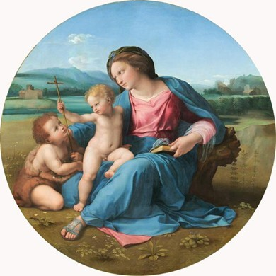
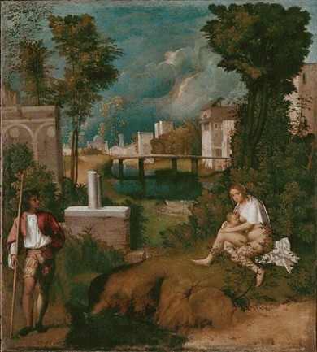
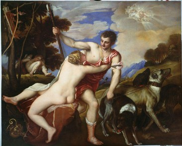
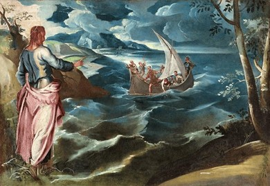

Soeur Wendy Beckett
Xuống cuối trang
CAO TRÀO PHỤC HƯNG
Vì Phục hưng cũng có nghĩa là "mới sinh" nên nó phải tiến hóa. Một
đứa trẻ sơ sinh luôn luôn lớn lên, nhưng chưa bao giờ có sự tăng
trưởng nào đẹp hơn sự tăng trưởng của hội họa ở cực đỉnh thời kỳ
Phục hưng, hay thời Phục hương cổ điển. Ở thời kỳ đó chúng ta gặp
những nghệ sĩ vĩ đại nhất của mọi thời đại: hai người khổng lồ thành
phố Florence, Leonardo da Vinci và Michel Ange, Raphaël của thành
phố Urbino và các họa sĩ Venise, Titien, Tintoret và Veronèse.
Do một ngẫu nhiên thú vị, một yếu tố chung đã nối liền cuộc đời của
bốn trong số những danh họa nổi tiếng nhất thời kỳ Phục hưng cổ điển
Léonard de Vinei và Michel Ange, Raphaël và Titien. Mỗi người đã bắt
đầu sự nghiệp nghệ thuật của mình bằng cách học nghề với một họa sĩ
đã nổi tiếng, và mỗi người đều theo cùng một con đường bằng cách
chấp nhận trước tất cả rồi vươn khỏi ảnh hưởng của ông thầy đầu
tiên. Người thứ nhất, Leonardo da Vinci (1452-1519), là người lớn
tuổi nhất trong các danh sư Florence. Ông là học trò của Andrea del
Verrocchio (1435-1488), một họa sĩ hấp dẫn, nhất là nỗi tiếng về
điêu khắc. Verrocchio cũng có ảnh hưởng đáng kể đối với tác phẩm đầu
tiên của Michel Ange. Bức tranh được biết tới nhiều nhất của
Verrocchio là bức Lễ rửa tội cho Chúa Christ, nổi tiếng vì thiên
thần có vẻ lãng mạn và mơ mộng ở bên trái, mà người ta cho là
Léonard vẽ, và chịu đựng được vinh quang hơn sự so sánh với thiên
thần khá vụng về và thiếu vẻ thanh lịch bên cạnh do chính tay ông
thầy vẽ.
LEONARDO DA VINCI: MỘT TRÍ TUỆ TOÀN KHOA
Không một nghệ sĩ nào khác xứng đáng hơn ông danh hiệu thiên tài một
cách đúng đắn và bất chấp mọi sự dè dặt. Leonardo da Vinci đã đạt
tới thành công ở mọi lĩnh vực. Con không chính thức của một công
chứng viên ở thành phố nhỏ Vinci, Toscane. Dù sao ông cũng được
người cha nhìn nhận, trả chi phí cho ông ăn học; nhưng chúng ta có
thể tự hỏi phải chăng tinh thần độc lập của ông lại không do thân
phận nhập nhằng của đứa con hoang. Một trí tuệ toàn năng tuyệt đối;
thiên nhiên gần như đã dồn cho ông quá nhiều rộng lượng, trong đó có
vẻ đẹp tuyệt vời, tiếng nói hoàn hảo, thân hình tuyệt mỹ, thiên tài
toán học, tính táo bạo khoa học... và còn nhiều nữa. Vì có quá nhiều
tài năng như vậy, nên đôi khi ông đã xử lý nghệ thuật của mình một
cách tự do quá trớn, ít khi hoàn tất một bức tranh và thử nghiệm hơi
quá nhanh một số phương pháp nhất định. Vì vậy mà bức Tiệc ly ngày
nay để ở tu viện Santa Maria delle Grazie đã bị hư hại rất nhiều vì
công việc chuẩn bị phần nền của bức bích họa đó không đầy đủ.
Tuy nhiên, những tác phẩm còn tới tay chúng ta ngày nay vẫn mang
chứng tích thiên tài phi thường của người sáng tạo. Bức Joconde danh
tiếng bậc nhất đã được nhiều họa sĩ sao chép với tất cả mọi chất
liệu có thể có được, thế mà cái ma lực của nó vẫn nguyên vẹn, vĩnh
viễn thách thức ai tìm cách cho bức chân dung bí hiểm đó một ý
nghĩa.

Leonardo da Vinci, Chân dung của Ginevra de’ Benci, khoảng năm
1474, 38,1 x 37 cm, Washington, Mỹ
Ba bức chân dung lớn của phụ nữ có cái vẻ u sầu mơ màng, đặc biệt
gây xúc động trong Người đàn bà với con chồn, không thể thăm dò
trong La Joconde và gần như gây hấn trong Chân dung của Ginevra de'
Benci (hình 16). Thật khó lòng chiêm ngưỡng La Joconde mà không có
tiên kiến, vì chúng ta chờ đợi ở đó quá nhiều. Chân dung của Ginevra
de' Benci thì ít được biết tới hơn, chúng ta có thể nhìn một cách
khách quan hơn. Người đàn bà trẻ có một nhan sắc ám ảnh, gần như
siêu thực, đặc trưng cho tranh chân dung của Leonardo da Vinci.
LÝ LỊCH GIẤU KÍN
Người mẫu của Chân dung của Ginevra de Benci không có nụ cười bị
kiểm chế như Mona Lisa, cũng không có vẻ dịu dàng tùng phục như
Cécilia trong Người đàn bà với con chồn. Miệng nàng đông cứng trong
một vẻ cáu kỉnh; cái đầu tuyệt đẹp ngẩng thẳng một cách kiêu kỳ trên
cái cổ mềm dẻo. Sự bực dọc phải ngồi làm mẫu thấy rõ trong mắt nàng
mà nàng hơi nhấm lại. Những lọn tóc thả xuống như dòng suối trước
chiếc trán cao và sáng sủa (chiếc trán của một trong những người đàn
bà thông minh nhất thời đó) và những chiếc lá bén nhọn như thép của
cây bách xù làm nổi bật vẻ mềm mại của làn tóc.
Làn sương mỏng, cây cõi âm u, mặt nước yên lặng: tất cả họp lại soi
sáng người mẫu. Là con người như chúng ta, thế mà nàng kín đáo,
không hiểu nỗi. Họa sĩ quan sát nàng, cảm phục sự hoàn hảo của nàng,
cho chúng ta thấy làn the mỏng của áo nàng và màu hồng tế nhị của
ngực nàng. Nhưng nàng thật sự ra sao thì nàng giấu kín một cách
bướng bỉnh dữ tợn. Điều mà Leonardo da Vinci phát hiện cho chúng ta
chỉ là ý định che giấu, sự rút vào bản thân, nó kiềm chế mọi phát lộ
ra ngoài.
BỀ SÂU CỦA TÁC PHẨM
Tranh của Leonardo da Vinci rất dễ nhận ra nhờ vẻ mềm mại của đường
viền và cách ông vẽ tóc đẹp như thần tiên. Một hình thể nhẹ nhàng
"len" vào một hình thể đến nỗi không nhận thấy được, lớp màu mỏng
tuyệt diệu tạo ra sự chuyển tiếp tinh vi đến độ khó tin giữa các sắc
thái và hình thể. Gương mặt của thiên thần trong bức Đức Mẹ giữa các
tảng đá hay gương mặt của Đức Mẹ trong phiên bản , của cùng bức
tranh (giữ ở Viện Bảo tàng Louvre), có một vẻ hiền minh kín đáo, một
chân lý nghệ thuật vô song.
Do tài năng hiếm có và thế giới riêng biệt của ông, rất ít họa sĩ có
thể bắt chước bút pháp của Leonardo da Vinci. Ngoài ra, về mặt thực
tế, ông còn xa cách các họa sĩ Ý khi ông đi sống ở Pháp theo yêu cầu
của vua François Đệ nhất. Tuy nhiên, họa sĩ nào chịu ảnh hưởng của
ông cũng chỉ vay mượn được cách thức, cái nụ cười nửa miệng, cái
không khí nhẹ nhàng như muốn bay hơi của ông mà thôi, như Bernardino
Luini ở Milan chẳng hạn.
Cái bóng của một thiên tài vĩ đại là một cái gì riêng tư. Trong bóng
của Rembrandt, có nhiều nghệ sĩ thành công đến nỗi chúng ta không
thể phân biệt tranh của họ với tranh của ông nữa. Nhưng cái bóng của
Leonard da Vinci thì quá sâu, quá dày đặc, quá mạnh mẽ, và đó là một
thiên tài quá rộng lớn.
ẢNH HƯỞNG BAO TRÙM CỦA MICHEL ANGE Ở FLORENCE VÀ ROMA
Michelangelo Buonarroti (1475-1564) có một ảnh hưởng rộng lớn. Trong
lúc sinh thời, tài năng của ông cũng đã được tôn sùng, nhưng, trong
trường hợp này cũng vậy, các môn đồ chỉ học được của danh sư kiểu
cách, sự mạnh mẽ và nét hoành tráng, hùng vì, nhưng họ thiếu cảm
hứng. Thí dụ, Sebastiano del Piombo (khoảng 1486-1547) đã dùng một
bản vẽ nét (dù sao cũng là một bản phác họa) do Michel Ange vẽ cho
để làm nền cho tác phẩm Sự hồi sinh của Lozare. Bức tranh đúng là
một tuyệt tác, nhưng có vẻ "kịch" nếu so với tác phẩm của Michel
Ange.
Michel Ange không chịu dùng cọ, với bản tính hăng hái ông quả quyết
rằng dụng cụ duy nhất của ông là cây dục. Dòng dõi tiểu quý tộc giàu
có ở Florence, tự nhiên là ông từ chối mọi sự ràng buộc bề ngoài.
Chỉ có giáo hoàng là người chuyên chế do địa vị và tính nết của mình
mới có thể buộc ông hoàn thành những bích họa vĩ đại nhất đời cho
nhà thờ Sistine. Người đồng thời nói rằng ông là người ít gai ngạnh
nhưng vẫn gây ấn tượng mạnh. Quả là không có nghệ sĩ nào khác có ấn
tượng mạnh như vậy, do tầm vóc tưởng tượng của ông, do sự hiểu biết
về ý nghĩa tinh thần của cái đẹp. Đối với ông, cái đẹp là một điều
thần thánh, một công cụ của Thượng đế giao tiếp với loài người. Như
Leonardo da Vinci, Michel Ange cũng có một danh sư người Florence,
Domenico Ghirlandaio (khoảng 1448-1494). Sau này, ông khẳng định
rằng ông không có một người thầy nào hết, điều đó có một ý nghĩa
bóng bẩy. Tuy vậy, cái cách ông điều khiển cây dục điêu khắc cho
thấy rõ món nợ của ông đối với Ghirlandaio, món nợ cũng dễ nhận ra ở
những nét gạch trong những hình họa của ông, kỹ thuật mà chắc chắn
ông đã học được của thầy. Cái tài năng rất ư ngọt ngào tỏ rõ trong
một bức tranh như Sự ra đời của thánh Jean Baptiste (tranh của
Ghirlandaio) cũng cho thấy sự giống nhau không kém rõ rệt với nét
thông minh phong phú trong một tác phẩm lúc Michel Ange còn trẻ như
Thánh giá hay Tondo Doni. Bức tranh có một vẻ đẹp lạnh lùng và xa
vắng, nhưng sức mạnh khắc khổ của nó còn đọng trong trí nhớ chúng ta
sau khi những bức tranh dễ hiểu hơn đã bị quên đi.
NHÀ THỜ SISTINE
Tài năng của Michel Ange đã khai triển tất cả sự hùng vĩ trên nóc
vòm nhà thờ Sistine. Được phục chế mới đây, tác phẩm đã từng làm
người ta sửng sốt này tỏ rõ tất cả sức mạnh ban đầu của nó về màu
sắc. Những hình thể tuyệt vời lỗ lộ với một sức mạnh phi thường,
luôn luôn được coi là hùng vĩ. Những hình diện lộng lẫy đó, mà ngày
nay màu sắc làm cho sống động, làm khó chịu những người thích vẻ đẹp
huy hoàng của chúng được che bớt đi.
Sự tích Sáng thế ghi lại trên trần nhà thờ không đơn giản chút nào,
một phần là vì Michel Ange là một người vô cùng phức tạp, nhưng cũng
vì ở đây ông đào sâu những vấn đề thần học mà phần đông người ta
không hiểu, và cuối cùng là vì ông làm cân bằng những chủ đề linh
tinh của ông với những sự kiện trong thánh kinh bằng hình khỏa thân
khổng lồ (ignudi), những thanh niên lực sĩ với vẻ đẹp siêu thực,
diễn tả một sự thực vẫn chưa được chúng ta hiểu rõ. Ý nghĩa của
những hình người khỏa thân đó không thể diễn tả được bằng lời, cũng
không thể liên hệ với tôn giáo, nhưng ấn tượng của nó thật mênh
mông.
NHỮNG CÔ ĐỒNG VÀ NHỮNG NHÀ TIÊN TRI
Cũng sức mạnh đó, nhưng dễ hiểu hơn, được thấy ở những nhà tiên tri
và cô đồng ngồi uy nghiêm trong những hốc tường phía dưới những lực
sĩ khỏa thần. Các cô đồng là nhân vật có uy quyền trong xã hội Hy La
cổ đại. Như những nhà tiên tri Do thái trong kinh cựu ước, lời tiên
tri của các cô đồng được tập hợp thành sách. Nhà tiên tri Do thái
truyền lại lời của Chúa Trời, trong khi đó cô đồng chờ người tá hỏi
những vấn đề đặc biệt. Đôi khi cô trả lời bằng những ẩn ngữ. Một
trong những cô đồng nổi tiếng nhất là cô đồng ở Cumes (một thành phố
vùng Campania Ý), người trong truyện L'énéide của Virgile, đã dẫn
đường cho Énée xuống Địa ngục. Trí thức và thi nhân, Michel Ange
cũng là người có văn hóa cao và lòng tin tôn giáo sâu sắc. Hình ảnh
Chúa Trời ở ông là hình ảnh một sức mạnh thần thánh toàn "lửa và
bằng giá", uy nghiêm trong sự trong sáng khắc khổ. Tiên tri và cô
đồng, do thiên hướng tìm hiểu mặt bí hiểm của Thượng đế, được ông
khoác cho sự sâu sắc thích hợp.

Michel-Ange Cô đồng ở Erythrée (Sibylle d'Erythrée), năm 1508, 360
x 380 cm, Nhà nguyện Sistina, Vantican
Cô đồng ở Erythrée (hình 17) mải mê xem sách. Họa sĩ không hề có
chút ưu tư về chi tiết lịch sử, ông cũng không tìm cách nhắc lại
những truyền thuyết của các tác gia cổ điển, ông chỉ chú trọng tới
giá trị biểu tượng của cô đồng, bằng chứng là luôn luôn có những trí
tuệ sáng suốt vượt lên trên tình huống hỗn loạn trong một thế giới
chìm đắm trong u tối.
Vì sự kiện cô đồng là một huyền thoại không có nghĩa gì với ông (ông
chỉ tin nơi tính chính thống của cơ đốc giáo), nên chỉ làm tôn giá
trị bức tranh. Tất cả chúng ta đều biết mình dễ bị tổn thương và, dù
trong tưởng tượng hay trong thực tế, những hình dạng con người có vẻ
thần thánh là một sự trợ lực lớn lao đối với chúng ta.
Ý nghĩa ẩn tòng về vinh quang của Chúa Trời trở nên rõ ràng trong Sự
phán xét cuối cùng. Sự kết án dứt khoát một thế giới mà họa sĩ coi
là hư hỏng vô phương cứu chữa, bản án thực chất là dị giáo mặc dầu
vào thời đó nó được coi là hoàn toàn chính thống. Chúa Christ người
Phán xét là một Apollon cao lớn và có ý chí báo thù, và sức mạnh của
bức tranh kinh khủng này là ở sự thất vọng của tác giả. Ông vé hình
ảnh chính mình trong bức Phán xét, không phải là hình hài vật chất
mà dưới dạng một tấm da bị lột, cái bọc trống rỗng của vật chất
chết... Trong khi cả Đức Mẹ Đồng trinh cũng quay mặt đi trước người
khổng lồ nổi cơn lôi đình đó thì điều an ủi duy nhất là tấm da đó là
tấm da của thánh Barthélemy và, qua lời nguyện của vị thánh tuẫn đạo
này, chúng ta biết rằng dù bị lột da sống, họa sĩ cũng được cứu
thoát một cách kỳ diệu.
Cũng hoàn toàn bình thản một cách uy nghi như cô đồng Erythrée, nhân
vật trong bức Chúa tạo ra Adam đưa bàn tay nặng trĩu cho người sáng
tạo ra mình, không biết cái gì đang chờ đại sự khổ nhọc phải sống.
CÔ ĐỒNG ERYTHERÉE
CÔ NGHIÊNG ĐẦU, MẢI MÊ ĐỌC
Cô lật trang sách với sự tự tin bình thản của người "thấy rõ", của
người "cho đơn thuốc", tiếp xúc được với sự sáng suốt thiêng liêng.
Cô có thần cảm và không thể sai lầm, và nét mặt cô không có vẻ xúc
động vì những điều cô độc. Vai trò của cô là "rao tin lành cho toàn
thể tạo vật" được thể hiện bằng trang sách mở mà mọi người đều thấy.
CÔ LẬT NHỮNG TRANG SÁCH THỜI GIAN
Tầm vóc cao lớn của cô đồng hiền hậu làm chúng ta yên tâm. Một cánh
tay chắc nịch đủ để lật những trang sách tương lai, tay kia buông
thông. Sẵn sàng đứng lên và hành động, nhưng cô vẫn ngồi yên, mải mê
đọc. Quyển sách nằm trên giá phủ vài xanh, tượng trưng của nội dung
thiêng liêng của nó.
NGỌN LỬA BIỂU TƯỢNG
Tiểu thiên thần cầm một ngọn đuốc mà ngọn lửa trông nh một con chim
lừa, biểu tượng của Chúa Thánh thần hạ trần. Cô đồng không cần có
ngọn đuốc soi sáng, ánh sáng của cồ có từ bên trong, và thần cảm
vững chắc của cô trái hẳn với một tiểu thiên thần trong bóng tối
đang dụi mắt như một cậu bé con.
NHỮNG ẢNH HƯỞNG CHI PHỐI RAPHAEL
Sau những nhân cách rất phức tạp của Leonardo da Vinci và Michel
Ange, bây giờ chúng ta đề cập tới nhân cách đơn giản hơn nhiều của
Raffaello Sanzio, tức Raphaël (1483-1520), một thiên tài cũng vì đại
như vậy, nhưng hành vi là hành vi của những người bình thường. Sinh
ra ở trung tâm nghệ thuật Urbino, ông tập sự trong xưởng vẽ của cha
trước khi làm việc cho Perugina là một họa sĩ tài năng, cũng như
Verrocchio và Ghirlandaio. Nhung trong khi Leonardo da Vinci và
Michel Ange vượt qua thầy mình một cách nhanh chóng và không chịu
ảnh hưởng gì của họ thì tài năng của Raphaël được xác định ngay từ
đầu và ông đồng hóa rất tự nhiên mọi ảnh hưởng. Ông chiếm lấy tất cả
cái gì ông nhìn thấy và nuôi dưỡng tài năng của mình bằng tất cả
những cái người khác dạy cho mình. Một tác phẩm thời trẻ của Raphaël
có thể giống một cách lạ lùng với một tác phẩm của Perugini. Thật
vậy, bức Chúa bị đóng đinh đức thánh Jerome và Thánh Madeleine của
Perugini trước đây được gán cho Raphaël cho tới ngày người ta có thể
chứng minh là tác phẩm đã được tặng cho nhà thờ ở San Gimignano vào
năm 1497, lúc đó Raphaël mới 14 tuổi. Bức tranh có một vẻ êm ả cảm
động, sùng kính hơn là sôi nổi, rõ ràng là của Perugini. Điều đáng
ngạc nhiên là, theo Vasari, Perugina là người vô thần không giấu
giếm. Ông vẽ cái phải giống như sự thật, chứ không phải cái ông tin
là sự thật, và điều đó phải giải thích sự thiếu cảm xúc sâu sắc.
TÁC PHẨM THỜI TRẺ CỦA RAPHAEL
Ảnh hưởng của con người hiền hậu Perugini cũng có mặt trong tác phẩm
thời trẻ của Raphaël. Bức Thánh Georges được vẽ khi ông 20 tuổi;
nàng công chúa nhỏ bé đang cầu nguyện thuộc bút pháp của Perugini.
Những sự hăng hái của chàng hiệp sĩ và của con ngựa, và sức mạnh thú
vật của con rồng thì trái ngược với hình ảnh nàng công chúa. Cái
đuôi con ngựa đập không khí như được truyền điện, và áo choàng của
chàng hiệp sĩ tung bay vì đang đà phóng tới giết con ác thú.
Raphaël đã được lợi nhiều trong những ngày đầu tiên ở Florence, lúc
Leonardo da Vinci và Michel Ange cũng làm việc ở đó. Đặc biệt chịu
ảnh hưởng của Léonard, ông nghiên cứu và áp dụng những kỹ thuật và
phương pháp vẽ mới, và tranh của ông đã tạo được hiệu lực tạo hình.
Một tác phẩm như Đức Bà Cowper, với đường bao mềm mại và sự cân bằng
hoàn hảo, cho thấy những thứ ông đã vay mượn của Leonardo da Vinci.
Hai gương mặt có tính nội tâm thường thấy ở Léonard, nhưng ở đây có
vẻ vững vàng và tự tin: gương mặt của Đức Mẹ, hoàn toàn để hết tâm
trí vào Chúa Hài Đồng, gần như mỉm cười, gần như cầu nguyện, còn
gương mặt của Chúa Hài Đồng thì rạng rỡ, nhìn chúng ta một cách mơ
màng với một vẻ dịu dàng xa vắng-Phía sau là cảnh đồng quê thanh
bình.
NHỮNG TÁC PHẨM SAU CÙNG CỦA RAPHAEL

Raphaël Đức Mẹ của công tước Alba (The Alba Madonna), năm 1510,
đường kính 94,5 cm, Washington, Mỹ
Raphaël vẽ chủ đề Đức Mẹ với Chúa Hài Đồng nhiều lần, mỗi bức tranh
là một tác phẩm ấm áp, dịu dàng. Bức Đức Mẹ của công tước Alba (hình
18) trái lại, thể hiện một thứ hùng tính theo kiểu Michel Ange. Dịu
dàng như luôn luôn thấy ở Raphaël, nhưng bà cũng được vẽ đẩy đà theo
hình thức bảng tròn, cảm xúc đó tăng dần cho tới cực điểm ở gương
mặt đăm chiêu. Cảnh vật kéo ra xa từ mọi phía theo một đường cong
thanh nhã, xung quanh ba nhân vật trung tâm, cho tới nếp áo ở khuỷu
tay Đức Mẹ. Sau đó nó len lỏi ra phía sau theo thân hình hơi nghiêng
của Đức Mẹ, và ý nghĩa của nó rất rõ: tình cảm không bao giờ bất
động, người ta cho và người ta nhận. Raphaël chết trẻ, nhưng ông là
một trong những thiên tài tiến bộ và phát triển liên tục. Ông có khả
năng phi thường (như Picasso, nhưng lớn lao hơn) là phản ứng mỗi ảnh
hưởng của thế giới nghệ thuật bằng cách hợp nhất nó vào tác phẩm của
mình.
Những sắc thái tương đối tương hợp và số màu giới hạn của bức tranh
hoàn toàn thích hợp với sự biểu lộ lòng can đảm và sự dịu dàng tiềm
tàng của Đức Mẹ và hoàn toàn khác với màu sắc rực rỡ trong bức Đức
Mẹ Cowper. Thái độ của Đức Mẹ, cũng như ánh mắt dịu dàng và đượm nét
buồn của bà, biểu lộ phẩm cách, nghị lực và lòng cương quyết. Bà
ngắm chiếc thánh giá bằng gỗ nhỏ với vẻ trầm ngâm.
Chiếc dép theo kiểu quân nhân của Bà nhấn mạnh tính phấn đấu. Như
Chúa Hài Đồng, Bà có một vai trò cao cả.
Từ khi Vasari mô tả bức chân dung Bindo Altoviti là "chân dung của
chính họa sĩ thời trẻ" thì các sử gia thích nghĩ rằng chàng thanh
niên tươi trẻ đó chính là Raphaël. Người đồng thời nói rằng ông rất
đẹp, tóc vàng, có vẻ trầm ngâm, dúng như bức chân dung. Tuy nhiên,
ngày nay người ta nghĩ rằng đó chính là Bindo lúc đó mới 22 tuổi
(còn Raphaël thì đã 33 tuổi và chỉ còn sống được 5 năm).
Raphaël với tư cách là họa sĩ chân dung chứng tỏ có tài quan sát bẩm
sinh hiếm có, biết gạt bỏ một cách dễ dàng những điều khó nói của
người mẫu để chỉ giữ lại hình ảnh mà bản ngã của người đó muốn cho
thấy, dù hình ảnh đó là thế nào đi nữa. Tính hai mặt đó (thấu triệt
nội tâm nhưng vẫn tôn trọng cái bề ngoài) làm cho tất cả tranh chân
dung của ông có một ý nghĩa phụ. Chúng ta thấy được cái chúng ta
không thấy, và biết được cái chúng ta không biết; đây không phải là
sự đánh giá mà là sự gặp gỡ.
Bindo Altoviti là người đẹp trai, giàu có và nổi tiếng (vì là chủ
ngân hàng), cũng gần như Raphaël. Có lẽ Raphaël cũng có nét giống
với người mẫu mà ông thể hiện trung thực dáng điệu cao nhã. Phân nửa
mặt ở trong bóng tối, như để người mẫu bí mật giữ thân phận của
mình. Môi đầy đặn có vẻ nhục cảm, cân bằng với cái nhìn chăm chú gần
như khiêu khích, mắt sâu. Những lọn tóc dày buồng thõng một cách cố
ý tương phản với chiếc mũ nồi và chiếc áo choàng lộng lẫy mà giản
dị. Tay đặt trên ngực có vẻ kịch để họ thấy chiếc nhẫn, hay có lẽ để
tỏ vẻ ung dung.
Raphaël không vẽ hậu cảnh phía sau chàng tuổi trẻ. Bindo Altoviti
đang ở một chỗ không có thật, màu lục sáng, ngoài thời gian, trong
tuổi thanh xuân vĩnh cửu, được nghệ thuật của những cái bấp bênh của
cuộc đời che chở.
Vùng tối của ống tay áo được vẽ cố ý. Bất chấp cái vẻ ung dung,
người ta cảm thấy chàng trẻ tuổi bị đe dọa. Người xem, vì đã biết
Raphaël chẳng còn sống được bao lâu nữa, có lẽ muốn đây là bức chân
dung tự họa. Bất cứ chân dung nào thực chất cũng có một chút hình
ảnh của họa sĩ, bởi vì không thể che giấu hoàn toàn tính cách của
mình để nhìn thực tế một cách khách quan: bức chân dung này cho ta
thấy hai con người, họa sĩ và người chủ ngân hàng trẻ tuổi.
Đối với chúng ta, tranh của Raphaël có vẻ lỗi thời, vì quá hoàn hảo
trong cái thế kỷ hết sức ít chú trọng tới chi tiết này. Nhưng, những
thánh tượng ca ngợi vẻ đẹp của con người vẫn luôn luôn làm chúng ta
xúc động: các bích họa của ông ở Vatican có thể so sánh với các bích
họa của nhà thờ Sistine. Bức L'école d'Athènes, chẳng hạn, đã làm
các nhà hiền triết trở thành bất tử, và có một vẻ đẹp cổ điển và
song. Ảnh hưởng to lớn của Raphaël đối với các họa sĩ di sau còn đầy
ấn tượng hơn, nếu ta xem xét cuộc đời ngắn ngủi của ông.
THỜI PHỤC HƯNG CỔ ĐIỂN Ơ VENISE
Sự vững chắc dễ dàng mà ta cảm thấy luôn luôn có ở Raphaël, sự vững
chắc ở đúng chỗ, biết sự vật vận hành ra sao, đó dường như là cái
phân biệt ông với một thiên tài khác cũng chết trẻ như ông, Giorgio
da Castelfranco, tức Giorgione (1477-1510).
Giorgione vẽ ít hơn Raphaël (và cuộc đời của ông còn ngắn ngủi hơn
nữa), và một vài tác phẩm mà người ta gán cho ông lại thường bị
tranh cãi, nhưng dù sao ông cũng thể hiện được một vẻ thanh tao não
nùng và cảm động, đó là nét riêng của ông. Ông làm việc trong xưởng
vẽ của họa sĩ vĩ đại người Venise Giovanni Bellini, người mà ông vay
mượn những đường bao mềm mại và màu sắc ấm áp. Như Raphaël, ông
không thuộc về thế giới này, cũng không thuộc về thế giới của những
người kế nghiệp như Titien và Tintoret. Giorgione dửng dưng với
những thực tế trần gian, nhưng, dù không phải lúc nào chúng ta cũng
hiểu lý luận trong tác phẩm của ông, chúng ta vẫn bị chúng lôi cuốn
một cách tự nhiên.

Giorgione, Cơn giông (The tempest), năm 1505, 77 x 74 cm, Venice,
Ý
Cơn giông (hình 19) là một trong những tranh được bàn cãi nhiều
nhất. Tầm quan trọng của bức tranh này đối với sự phát triển của hội
họa Venise là ở ưu thế của thiên nhiên phong phú. Nếu không ai tranh
cãi rằng Giorgione là tác giả thì người ta vấn có thể tự hỏi người
quân nhân đứng bất động, yên lặng mơ màng dưới cơn giông là ai, và
người phụ nữ gitan khỏa thân, cho con bú và không chú ý gì tới người
lính đó là ai. Những toan tính so sánh với việc chạy trốn vào Ai Cập
(của Đức Mẹ Maria và Chúa Hài Đồng) đã vấp phải tình trạng khỏa thân
không giải thích được của người đàn bà. Vô số cách giải thích đã
được đưa ra, tất cả đều tài tình và đều có cơ sở.
Sự phân tích khoa học cũng không giúp giải quyết vấn đề nhiều lắm
khi phát hiện lớp vẽ đầu tiên với một người đàn bà thứ hai khỏa thân
tắm trong dòng sông. Có lẽ chúng ta không bao giờ hiểu được ý nghĩa
thật sự của bức tranh, trừ tính cách không thể hiểu của nó. Thế giới
hiện ra đột ngột trong ánh sáng dữ dội của tia chớp và bấy giờ chúng
ta phát giác được những bí mật mà trước đó bị bóng tối che giấu.
Thiên nhiên đậm chất thơ trong vài bức tranh được nhiều người biết
của Giorgione đã đem lại cho nghệ thuật Phục hưng Venise một phẩm
chất không bao giờ hoàn toàn mất hết. Mặc đầu bức Ba nhà hiền triết
dở dang của ông được một người bạn của Michel Ange là Sebastiano del
Piombo hoàn tất, nó cũng cho thấy sức mạnh của sự trữ tình phong phú
đó. Chủ đề thực tế dường như không quan trọng mấy đối với họa sĩ, có
lẽ ông đã bắt đầu vẽ một bức tranh về ba vua đạo sĩ, ba vua của
phương Đông đã đi theo ngôi sao giáng sinh tới chuồng bò. Vì đạo sĩ
cũng được coi là nhà thiên văn nên Giorgione đã nghĩ tới khái niệm
nghiên cứu triết học, xác định vị trí của tinh tú bằng kính lục phân
và tìm hiểu về ý nghĩa của chúng.
Cả ở đây nữa, chúng ta cũng gặp lại ba giai đoạn của con người: công
việc được bắt đầu do người trẻ tuổi chín chắn, được xem xét và phân
tích do người trung niên già dặn, rồi được bảo tồn dưới hình thức
vật chất của nó do người già minh mẫn mặc chiếc áo lụa rực rỡ.
Mỗi chi tiết có một ý nghĩa tâm lý: chàng thanh niên đơn độc như
người ta thường như vậy ở tuổi đó, mặc quần áo trẻ trung đơn giản.
Ai có thể chia sẻ những mơ mộng và ước vọng của chàng? Hai người
trưởng thành quay mặt vào nhau như đang chuyện trò, thế mà họ cũng
cô đơn như chàng trẻ tuổi. Đó là những người lớn tuổi, không còn cái
hăng hái của tuổi trẻ, nhưng họ đóng góp sức nặng và sự chín chắn
của kinh nghiệm cho mọi vấn đề.
Nhà hiền triết ở giữa giống như một nhà kinh doanh, bàn tay ông ta
để không và sẵn sàng làm việc. Bên cạnh ông, ông già nắm giữ bằng
chứng cụ thể của những tư tưởng của mình, một bản dồ bầu trời. Tuy
vậy, ba hình thể đó chỉ chiếm phân nửa bức tranh. Phần còn lại -
phần cho họ cái ý nghĩa của họ - gồm một cây to và những tảng đá.
Một cái hang tăm tối mở ra trong hốc đá và, ở đàng xa, phong cảnh
tắm ánh mặt trời. Có hai con đường: mạo hiểm đi vào cái hang chưa ai
biết, hay hướng về cánh đồng xinh đẹp quen thuộc; đi vào bên trong,
vào tinh thần, hay ra ngoài, vào ngoại giới và món quà của nó. Mỗi
người, đơn độc, đối mặt với sự lựa chọn.
Tính chất gay gắt của bức tranh được thể hiện bằng phong cảnh mùa
thu. Các nhà phê bình nói với chúng ta rằng chòm râu của ông già gợi
ý triết lý của Aristote, rằng người ở giữa mặc quần áo Đông phương
nhắc nhở tư tưởng hồi giáo và cái kính lục phân trong tay bất động
của chàng thanh niên tượng trưng cho nền triết học tự nhiên mới mẻ
mà ngày nay chúng ta gọi là khoa học; nhưng sự giải thích đó, dù
đúng hay sai, cũng không có nguyên nhân. Cái quan trọng là thi vị,
tỉnh trầm trọng nội tâm, sự lựa chọn.
NGƯỜI CHUẨN BỊ CHO TITIEN
Một thí dụ hoàn hảo về sự cộng tác giữa Giorgione và Titien là bức
Sự chiêm bái của các Mục tử. Titien chắc chắn đã hoàn tất vài bức
tranh của Giorgione sau khi họa sĩ này mất sớm. Ngày nay, giới phê
bình nói bức tranh đó hoàn toàn do Giorgione vẽ, nhưng cũng rất có
thể nó là của Titien. Theo cách nào đó, chủ đề của bức tranh, hay ít
nhất sự quan tâm chủ yếu của tác giả, là ánh chiều tà nhẹ nhàng,
bàng bạc, và nét nhấn mạnh về ánh sáng và phong cảnh - một cách tân
của Giorgione - cũng là một trong những quan tâm thường trực của
Titien. Ánh sáng hợp nhất tất cả cái gì nó chiếu tới, và dầu có vài
nhân vật xuất hiện ở hậu cảnh, ấn tượng trội hơn hết cũng nặng tính
bất động và sự im lặng.
Hoạt động của thế giới trần gian ngưng lại. Cha mẹ, Chúa Hài Đồng và
mục tử có vẻ chìm đắm trong một giấc mộng vĩnh cửu, mặt trời đứng im
ở chân trời, thời gian ngừng trôi. Các con thú cũng chìm đắm trong
lời cầu nguyện, và tính hiện thực của sự kiện xóa nhòa trước ý nghĩa
tinh thần của nó. Giorgione đưa chúng ta qua khỏi ranh giới vật chất
mà vẫn không chối bỏ những ranh giới đó.
TITIEN, HỌA SĨ "HIỆN ĐẠI"
Tiziano Vecellio tức Titien (khoảng 1488-1576), người kế tục
Giorgione, hẳn là một trong những họa sĩ sống lâu nhất, trái với
Giorgione và Raphaël. Ông là một trong những nghệ sĩ tài năng hiếm
có (Rembrandt và Matisse là hai người nữa) đã tiến từng chặng đường
để đạt tới cực đỉnh trong nghệ thuật của mình vào lúc tuổi già.
Titien lúc còn trẻ đã tuyệt vời, Titien khi già thì không ai bằng.
Trước khi làm việc với Giorgione, Titien đã qua một thời gian trong
xưởng vẽ của Giovanni Bellini. Sự lão luyện của Bellini về kỹ thuật
tranh sơn dầu - là việc đã thay đổi hẳn hội họa Venise - có một ảnh
hưởng to lớn đối với nghệ thuật của Titien, và đối với hội họa
phương Tây sau này. Trong tranh của Titien, ta thấy thứ tự do báo
hiệu nghệ thuật hiện đại: bức tranh với tính cách là chính vật liệu,
được xem xét vì những phẩm chất riêng của nó trong sự hòa hợp với
câu chuyện, nhưng phân biệt với câu chuyện.
Titien có lẽ là người quan trọng nhất trong tất cả những họa sĩ lớn
của thời Phục hưng. Trái với những người đi trước đã học cả nghề
chạm khắc gỗ, nữ trang và những nghề thủ công mỹ nghệ khác, ông dành
hết năng lực cho hội họa, việc này đã báo trước nền hội họa hiện
đại. Bức Đừng đụng vào ta cho thấy Titien lúc còn trẻ đã bị thu hút
vì cảnh ngộ tế nhị giữa cô Marie Madeleine hăng hái, ăn mặc lộng
lẫy, và Chúa Christ khắc khổ lẫn tránh với thiện ý vô biên.
Trong hoàn cảnh tự do sau khi Phục sinh, Chúa Christ gần như đang
nhảy múa; người thiếu phụ vẫn người, ngã gục dưới gánh nặng ưu tư.
Một cái cây nhỏ cho ta biết một cuộc sống mới vừa bắt đầu, và rột
thế giới vẽ giới hạn trải dài ở chân trời tới tận những ngọn đồi
xanh, bỏ mặc Marie Madelaine cho những lựa chọn riêng tư. Một nỗi cô
đơn mơ hồ phảng phất trên bức tranh, ám chỉ sự nuối tiếc của
Giorgione về một cái gì thi vị đã mất. Nhưng bầu không khí vẫn là
bầu không khí của thế giới trần gian.
HỌA SĨ CHÂN DUNG LỖI LẠC
Bức chân dung Ranuccio Farnèse (cháu nội của giáo hoàng Paul III)
đánh dấu tài năng chín muồi của Titien và cho thấy sự phát triển
tinh thần toàn vẹn của họa sĩ. Ông không chỉ quan tâm tới kỹ thuật
thuần túy như là phương tiện diễn đạt tư tưởng bằng hình ảnh, hình
ảnh tự đáy lòng của họa sĩ hiện ra gần như tự nhiên.
Bức chân dung cho thấy hình ảnh một thiếu niên rạng rỡ trong phẩm
phục. Một thánh giá bằng bạc sáng rực trên ngực, phía dưới là lưỡi
đoản kiếm cũng sáng lóng lánh. Nhưng gia huy và dấu hiệu chiến tranh
nằm trong vùng bóng; cái hiển hiện là chiếc bao tay mà cậu cầm trong
tay trần, một bàn tay sẵn sàng đảm nhiệm gánh nặng của cuộc đời,
không run sợ mà cũng không được bảo vệ. Sự sẵn sàng chờ đợi thấy rõ
trên gương mặt thơ ngây còn nét trẻ con.
Chúng ta chiêm ngưỡng vẻ quý phái cố ý do họa sĩ nhấn mạnh, nhưng
chúng ta xúc động vì bóng tối bao phủ Ranuccio, trong đó cậu sáng
chói như một cây nến nhỏ đang cháy.
Cảm giác của Titien gần như làm chúng ta kinh hoàng trong trạng thái
hiện thực của nó. Với một kỹ thuật tuyệt vời, ông cho chúng ta thấy
tính dễ bị tổn thương của nhân vật trong khi vẫn thực hiện được một
bức tranh đẹp lạ thường.
THỜI KỲ SAU CÙNG CỦA TITIEN
Vào lúc cuối đời, Titien vẽ nhiều tranh thần thoại, cũng đầy chất
thơ như Giorgione, nhưng đượm một vẻ buồn sâu đậm hơn. Có khi ông vẽ
đi vẽ lại một bức tranh, dường như để tìm một mặt cuối cùng của một
hình ảnh khó thể hiện. Trong số các chủ đề trở đi trở lại đó, Venus
và Adonis (hình 20) cho thấy nữ thần ái tình van nài chàng trẻ tuổi
đẹp trai đừng đi săn, vì do thiên cảm tiên trí, nàng biết chàng sẽ
bị giết chết trong cuộc săn. Adonis không chịu nghe, không muốn tin
rằng chàng có thể chết - thái độ điển hình của sự thiếu kinh nghiệm.
Chàng là mẫu người tiêu biểu của tất cả những người trẻ tuổi ra
chiến trận hay tìm chuyện phiêu lưu, và Venus là hiện thân của những
người đàn bà tìm cách giữ họ lại. Nàng được tất cả những người đàn
ông thèm muốn, nàng là nữ thần đẹp nhất, được tất cả thần linh yêu
mến, nhưng sự ham mê săn bắn của Adonis có nhiều quyến rũ hơn, và
chàng nóng nảy đẩy nàng ra.

Titien, Venus và Adonis (Venus and Adonis), năm 1554, 106,8 x 136
cm
Người ta cũng có thể thấy trong bức tranh này sự phúng dụ mỉa mai về
người đàn bà yêu một người đàn ông trẻ hơn mình: Vénus là nữ thần,
bất tử, trong khi sự tin chắc của Adonis ràng mình cũng bất tử sẽ bị
cái chết thảm khốc phủ nhận.
Những tác phẩm cuối cùng của Titien là những bức tranh màu sắc tuyệt
diệu, óng ánh màu da thịt mềm mại. Những bím tóc cuộn tròn của Vénus
gợi ý sự khôn ngoan của nàng, không có một dấu hiệu gì của một tình
nhân cuồng loạn. Những con chó săn to lớn, có ý thức hơn chủ của
chúng, tỏ ra bồn chồn, và thần Ái tình Cupid rớt nước mắt vì thương
xót.
CƯỜNG ĐỘ CẢM XÚC
Titien đã là một họa sĩ như thế nên thật là ngạc nhiên khi Ruskin,
nhà phê bình nổi tiếng thời nữ hoàng Victoria, viết rằng Tintoret
(1518-1594) còn cao siêu hơn nữa. Tên thật của Tintoret là Jacopo
Roboati, nhưng ông đã sớm có biệt danh "il Tintoretto" (cậu bé Thợ
nhuộm) là do nghề nghiệp của cha. Trong một thành phố nhỏ như
Venise, tất cả nghệ sĩ đều biết nhau và Tintoret, nhỏ hơn Titien
khoảng ba mươi tuổi, khẳng định rằng tham vọng của ông là kết hợp
màu sắc của họa sĩ này với đường nét của Michel Ange. "Đường nét"
không phải là tiếng thích hợp lắm đối với tính thống nhất màu sắc
theo kiểu Venise: hình thể lộ ra một cách mềm mại từ trong ánh sáng.
Về phần Tintoret, ông là một họa sĩ Venise nặng bản năng, vẽ trong
cơn thịnh nộ, vung vãi ý tưởng trước khi tập hợp lại thành một toàn
thể thống nhất.
Trong tranh của ông, người ta cảm thấy cái mê say của phương pháp,
và trong cái linh hoạt của đường nét có cái sống động hăng say của
chuyển động. Chỉ có một tài năng rộng lớn mới có thể dung chứa nỗi
xúc cảm run rẩy trong khi vẫn giữ vững sự trung thực và đơn giản của
nó, và tất cả tác phẩm lớn của Tintoret đều làm chúng ta xúc động do
sự trung thực hoàn toàn và khả năng gây xúc động khó cưỡng của
chúng. Một trong các tác phẩm: lúc ông còn trẻ, bức Sự quy đạo của
Thánh Paul cho thấy sức tưởng tượng rất mạnh đó.
Đối với phần lớn các họa sĩ, việc quy đạo của thánh Paul là một sự
kiện cảm động: Paul té xuống ngựa và: nhận được thông điệp của thần
linh trong khi còn kinh hoàng nằm trên mặt đất. Nhưng không một tác
phẩm nào cho thấy cái nhịp điệu dữ dội như tranh của Tintoretto. Cõi
trần gian xấu xí trong cảnh hỗn độn khi cái thiêng liêng đột ngột
xuất hiện. Ở bên phải, một con ngựa phi nước đại chạy trốn, cờ xí
phất phới; ở bên trái, một con ngựa khác hí vang và chồm lên, người
cởi sừng sững như hóa đá, vẫn còn chóa mắt vì ánh sáng thần thánh.
Núi dựng lên, cây cối rung chuyển, con người loạng choạng, ngó
nghiêng, những đám mây đe dọa tràn ngập bầu trời. Paul nằm sóng soài
dưới đất, bên cái bóng của con ngựa cũng ngã. Nhưng ông không bị sự
kinh hoàng khuất phục, ông vươn tay tìm sự cứu rỗi.
Một số tranh trong những bức mạnh mẽ nhất của ông vẫn còn ở yên
trong khung cảnh Venise của chúng. Bức Tiệc ly vẫn nằm ở chính điện
nhà thờ San Giorgio Maggiore. Đó là sự thể hiện bữa ăn cuối cùng của
Jésus với các tông đồ mà sau này người ta nhắc lại bằng lễ ban thánh
thể. Họa sĩ ít chú ý tới các tông đồ (Judas thường là nhân vật trung
tâm, thì ở dây khó nhận ra). Tintoret cho thấy sự hy sinh của lễ ban
thánh thể, và mặc dầu đủ thứ hoạt động diễn ra quanh phép lạ đó - vì
chó, mèo, và các cô hầu gái cũng có mặt trong hoạt cảnh, tất cả đều
hư ảo, trừ Chúa Jésus và món ăn thần thánh. Thiên thần bay lượn và
mất hút trong tia sáng vinh quang của Người, và sự có mặt của con
người chỉ có được sự liên quan mờ nhạt khi nó được làm nổi bật bằng
một vầng ánh sáng thiêng. Trong bức tranh này không có mảy may ý
định hiện thực nào, nhưng chỉ có một ý nghĩa thiêng liêng tiềm ẩn.
Hoặc chúng ta thấy lòng xúc động, hoặc thấy bức tranh quá đông
người.
Bức Christ đi trên mặt nước (hình 21) của giai đoạn sáng tác cuối
cùng của Tintoret là một tác phẩm sâu sắc và xúc cảm mạnh mẽ, cho
chúng ta nhiều hơn là một khoảnh khắc mong manh cố định trong thời
gian. Trong khi chuyển động vĩnh cửu của sự sống không thể dừng lại
đủ lâu để phát hiện cái thiêng liêng thì Tintoret miêu tả một cảnh
tượng phi thời gian. Christ đứng trên mặt biển rộng và kêu gọi các
môn đồ. Hình ảnh đơn độc, uy nghiêm, phát ra mệnh lệnh thiêng liêng.

Jacopo Tintoretto, Christ đi trên mặt nước (Christ at the Sea of
Galilee), khoảng năm 1575 - 1580, 117,1 x 169,2 cm Washington, Mỹ
Các tông đồ ngồi chung trong một chiếc thuyền mỏng manh, mặc cho
biển động đưa đẩy, bất lực trước biến cố. Tiếng gọi của Jésus kéo họ
ra khỏi sự bất lực kinh hoàng. Pierre vui mừng nhảy xuống nước, mắt
nhìn Chúa dăm dăm. Những lượn sóng đáng sợ ngăn cách hai người,
nhưng không một lúc nào Tintoret nghi ngờ hai người sẽ gặp nhau. Sức
mạnh tàn bạo không thể chống lại Chúa và vì vậy không thể ngăn cản
người muốn tìm Chúa. Nghệ sĩ cho thấy một thiên nhiên đe dọa nhưng
bị làm cho vô hại. Chúa không được vẽ nhìn thẳng, nhưng Pierre nhìn
Người và thấy đức tin cho phép mình đi gặp Chúa.
Tranh của Tintoret có một sức sống trữ tình kỳ diệu mà ta thấy ngay
trong một bức tranh phàm tục như Mùa hè, bức tranh khiến ta nhớ tới
nghệ sĩ lớn thứ ba người Venis, Veronèse.
VERONÈSE: MỘT THẾ GIỚI CỦA CÁI ĐẸP
Người ta nói rằng Paolo Caliari tức Veronèse (1528-1588) là họa sĩ
"thuần túy" đầu tiên do sự dửng dưng của ông đối với thực tại mà ông
vẽ, vì màu sắc trở thành phương tiện biểu hiện chính của ông. Tranh
của ông có sức rạng rđ sâu sắc, hiện thân của nghệ thuật trang trí ở
mức cao nhất.
Có thể là Veronèse ít cảm hứng hơn Titien hay Tintoret, nhưng sự say
mê của ông đối với bộ mặt của sự vật và cái đẹp tiềm tàng của chúng
đã nâng nghệ thuật của ông lên rất cao. Ông không cho thấy cái gì có
thật, mà là cái phải hay có thể có thật trong lý tưởng, tôn vinh
tính vật chất một cách long trọng và hào phóng.
Khi mô tả bộ mặt sự vật một cách nghiêm túc như vậy, ông đã cho nó
một tầm vóc khác. Bức Thánh Lucie và một người cung tiến không thật
sự thể hiện sự tuẫn đạo. Họa sĩ giả thiết rằng chúng ta biết khá đủ
lịch sử nên có thể tự mình vạch lại. Thật vậy, điều mà ông mô tả là
ánh hào quang của nữ nhân vật, vẻ đẹp rực rỡ trong lụa là nhung gấm
của nàng.. Nét mặt tươi sáng đáng yêu của nàng có vẻ sợ hãi. Nhánh
cọ của kẻ tuẫn đạo cho thấy biểu tượng truyền thống của nàng là một
con mắt. Sự ám chỉ không thể kín đáo hơn. Người cung tiến đã có tuổi
giống một người ngưỡng mộ hơn người có lòng thờ phụng vị nữ thánh.
Bức Moise được vớt từ sông lên cũng vậy và thể hiện một lời nhắn nhủ
hy vọng: người ta liên kết sự an lạc với sự sang trọng của quần áo
công chúa và đoàn tùy tùng. Tất cả nhân vật, kể cả đứa bé, đều xinh
đẹp, thanh nhã và hạnh phúc. Họ có một vẻ giản dị vui tươi. Cây cối
đong đưa làm cho phong cảnh quang đãng. Công chúa nhìn đứa bé một
cách dịu dàng. Một câu chuyện như thế trong kinh thánh đáng lẽ phải
đầy vẻ nghiêm trang, nhưng đó không phải là sự lựa chọn của
Veronèse. Cái làm cho ông hoan hỉ là sự huy hoàng của con người.
Người ta thường có khuynh hướng chỉ coi Veronèse chỉ như một họa sĩ
trang trí lỗi lạc. Nhưng ông đã dưa nghệ thuật trang trí tới một
điểm cao đến nỗi nó trở thành một nghệ thuật một cách chính đáng,
nghệ thuật phát hiện cái đẹp. Trong tranh của ông, chúng ta thật sự
thấy tiềm năng của một thế giới vật chất thật sự đẹp.
Lên đầu trang